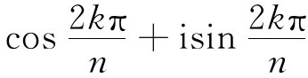
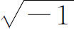
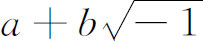
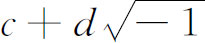
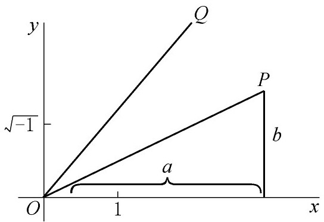
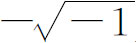
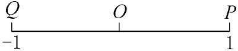
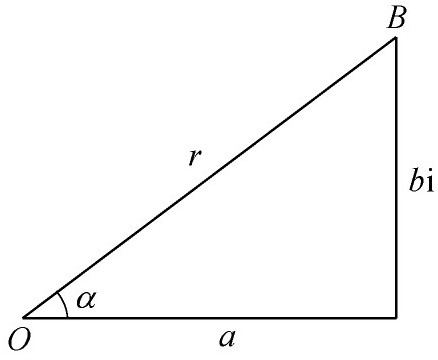

3．复数的几何表示
使单复变函数理论的建立更为直觉合理的一个重要步骤是复数及其代数运算的几何表示。许多人———科茨、棣莫弗、欧拉，以及范德蒙德———确实曾把复数看作是平面上的点，这可以由下述事实来说明：当他们解方程xn-1＝0的时候，他们都把这些解

看作是一个正多边形的顶点。例如，欧拉把x和y几何地设想为坐标平面上的点，用x＋iy代替x和y，然后将x＋iy表示为r（cosθ＋isinθ），再将r和θ作为极坐标画出来。因此可以说复数作为平面上点的坐标的表示法在1800年就已经知道了。不过，没有做出两者的决定性的同一化，也没有给出复数的代数运算的任何几何意义。还缺少把x＋iy的复函数u＋iv的值用另一个平面的点来表示的想法。
1797年，挪威出生的自学的测量员韦塞尔（Caspar Wessel，1745—1818）写了一篇论文，题目是《关于方向的分析表示；一个尝试》（On the Analytic Representation of Direction；an Attempt），这篇论文刊载在丹麦皇家科学院1799年的论文集中。韦塞尔企图几何地表示出有向线段（向量）以及它们的运算。在这篇论文中，除寻常的具有实单位1的x轴外，他同时引进了一根虚轴，以

（他把写为ε）作为单位。在韦塞尔的几何表示法中，向量OP（图27.1）是在具有单位＋1及的平面上从原点O画出线段OP，这向量用复数
表示。类似地，向量OQ是线段OQ，且是用另一数
表示。
图27.1
然后韦塞尔利用以几何术语定义的复数运算来定义向量的运算。他给出的四种运算的定义实际上就是我们今天所学习的。例如a＋bi与c＋di的和是相邻两边OP与OQ所决定的平行四边形的对角线。a＋bi与c＋di的积是一个新的向量OR，使得OR与OQ的比等于OP与实单位之比，而OR与x轴的夹角是OP及OQ与x轴的夹角之和。显然，与其说韦塞尔将复数与平面上的点相联系，还不如说他想的是将平面上的点用向量表示。他把他的向量几何表示法用于几何问题与三角问题。韦塞尔的论文尽管有巨大的价值，但一直未被注意，直到1897年译成法文重新发表，才被人们重视。
瑞士人阿尔冈（Jean-Robert Argand，1768—1822）给出了复数的一个稍微不同的几何解释。阿尔冈也是自学的，并且是一个簿记员，他曾出版了一本小书《试论几何作图中虚量的表示法》（Essai sur une manière de représenter les quantités imaginaires dans les constructions géométriques，1806）(2)。他注意到负数是正数的一个扩张，它是将方向与大小结合起来得出的。于是他问，我们能否利用增添某种新的概念来扩张实数系？考虑序列1，x，-1，我们能否找到一种运算，将1转变为x，再把它应用到x上又将x转变为-1？如果将OP（图27.2）按反时针方向绕O转动90°，然后重复这个转动，我们就确实由于两次重复一个运算而由P到了Q。但是，阿尔冈注意到，这正是以乘1，然后又以乘此乘积时所发生的事情，即得到-1。所以我们可以把看成是按反时针方向转过90°的旋转，而

是顺时针方向转过90°的旋转。
图27.2
利用复数的这个运算意义，阿尔冈决定，由原点出发的一个典型线段OB （图27.3，他称它为有向线）应表示为r（cosα＋isinα），其中r为长度。他也把复数a＋bi看作是符号化了a及bi的几何结合OB。阿尔冈像韦塞尔一样，指出如何将复数几何地相加或相乘，并应用这些几何想法去证明三角、几何及代数的定理。虽然阿尔冈的书在复数的几何解释方面惹起一些争论，但这是他对数学所作的唯一贡献，他的工作没有多大的冲击，然而我们现在仍然讲阿尔冈图解。

图27.3
在使人们接受复数方面，高斯做得更为有效。他在代数基本定理的几个证明中，用了复数（第25章第2节）。在前三个证明中（1799，1815及1816），他预先假定了直角坐标平面上的点与复数的一一对应。这里没有实际画出x＋iy，而是将x和y作为平面上一点的坐标。此外，在证明中并没有真正用到复函数理论，因为他将涉及的函数分为实部和虚部。他在1811(3)年给贝塞尔（Friedrich Wilhelm Bessel）的一封信中说得更明显，他说a＋bi用点（a，b）表示，并说在复平面上可以沿着许多路径从一点到另一点。毫无疑问，从三个证明及其他未发表的工作（其中有一些我们随后就要讨论）中所表现出来的思想，可以判断1815年高斯已完全掌握了复数及复函数的几何理论，虽然在1825年的一封信中他确实说了“的真正奥妙是难以捉摸的”。
然而，如果说高斯仍旧有任何顾虑的话，那他在1831年前后已经克服了它们，他公开描述了复数的几何表示。高斯在为他的论文《双二次剩余理论》（Theoria Residuorum Biquadraticorum）所作的第二个说明(4)中以及在他为1831年4月23日的《格丁根学报》（Göttingische gelehrte Anzeigen）所写的这篇论文的“摘要”中(5)，他对复数的几何表示是很清楚的。在论文的第38节中他不仅将a＋bi表示为复平面上一点（不像韦塞尔和阿尔冈那样表示为一向量），而且阐述了复数的几何加法与乘法。在“摘要”(6)中高斯说，双二次剩余理论进入复数域可能会扰乱不熟悉这些数的人们，并且可能使他们对剩余理论有不确定的印象。所以他重复了他在这篇论文中对复数的几何表示所说的话。然后他指出，虽然现在对于分数、负数及实数都已很好地理解了，但对于复数只是抱了一种容忍的态度，而不顾它们的巨大价值。对于许多人来说，它们不过是一种符号游戏。但是在这个几何表示中人们可以看到“复数的直观意义已完全建立起来并且不需要再增加什么就可以在算术领域中采用这些量［着重号是添加的］”。他还说，如果1，-1和原来不称为正、负和虚单位而称为直、反和侧单位，那么人们对这些数就可能不会产生一些阴暗神秘的印象。他说几何表示使人们对虚数真正有一个新的看法。他引进术语“复数”(7)以与虚数相对立，并用i代替。